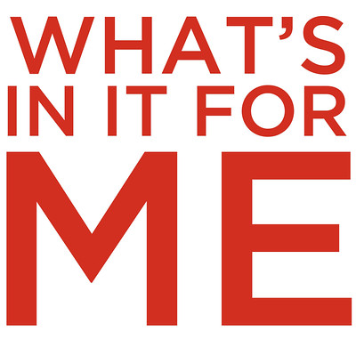

name: Teacher for Learning class: middle, center # Kai & Kōrero ## {{ name }} .bottom-bar[ Unless otherwise noted, this work is licensed under a Creative Commons Attribution Non-Commercial Share Alike license.<br>Feel free to use, modify, reuse or redistribute any or all of this presentation. ] --- class: twocolumn # Module Outcome .left-column[<img src="./images/Teacher.png" height="75%" width="75%"/>] .right-column[## Design effective learning activities and experiences that are grounded in research-based principles of learning that promote students using their knowledge in meaningful ways. ] --- class: twocolumn # Objectives .left-column[<img src="./images/Teacher.png" height="75%" width="75%"/>] .right-column[ 1. Reflect on core beliefs about teaching and learning and the ways they impact teaching practices and learning outcomes. 1. Examine teaching approaches and strategies that foster student learning in specific contexts (e.g. UDL, metacognition). 1. Identify considerations when designing significant learning experiences grounded in and informed by research-based principles. ] --- class: twocolumn # Activity #1 – Misunderstood? ## Identify a concept that is often misunderstood in your discipline. .left-column[ - Can you think of an analogy that can help make the concept make sense to students? - Does it consider where students are coming from in their previous experiences? - Can it be broken down into digestible chunks? ] .right-column[] --- class: twocolumn # Activity #2 – Syllabus Concept Map ## How can we organise information for students differently? .left-column[ - ### [Mindmup](https://www.mindmup.com) - ### [Coggle.it](https://coggle.it) - ### [CmapTools](https://cmap.ihmc.us) ] .right-column[ .attribution[[Assorted files](https://unsplash.com/photos/assorted-files-05HLFQu8bFw) | [Viktor Talashuk](https://unsplash.com/@viktortalashuk) | [Unsplash](https://unsplash.com/license)] ] --- class: twocolumn # Activity #3 – WIIFM ## “Because you should know it.” .left-column[ - Can you think of an example of WIIFM that could help students in your paper(s)? - What have you found most helpful so far in the paper? ] .right-column[ .attribution[[WIIFM](https://www.flickr.com/photos/groundswellzoo/8314064918/) | [Nathan Stephens](https://www.flickr.com/photos/groundswellzoo/) | [CC BY-SA 2.0](https://creativecommons.org/licenses/by-sa/2.0/)] ]